TRAUMATIC
BRAIN INJURY
BY
SASWATIKA PANDA
MSC (N) 1
ST
YEAR
REVIEW OF ANATOMY
AND PHYSIOLOGY OF
NERVOUS SYSTEM
INTRODUCTION

REVIEW OF NERVOUS
SYSTEM-
Neurology is the branch of medicine concerned with the study and
treatment of disorder of the nervous system. The nervous system
regulate body activities by responding rapidly using nerve impulses.
Nervous system made of up neuron and it s supporting glial cell who
collect information through its sensory system analyse the signal by
inter neuron and giving commands through its motor system
.
DIVISION OF NERVOUS SYSTEM :
NERVOUS
SYSTEM
CENTRAL
NERVOUS
SYSTEM
BRAIN SPINAL CORD
PERIPHERAL
NERVOUS
SYSTEM
SPINAL NERVE
AND CRANIAL
NERVE

NEURON:-
Classification according to structure-
1.Multipolar neuron usually have several dendrites and one axon
must neurons of the brain and spinal cord are of this type as well as
all motor neuron.
2.Bipolar neuron: signal propagation occur at dendrites to ward cell
body then signal goes away from cell body.
3.Pseudo unipolar neuron during development the dendrites and
axon fused together and become a single process.
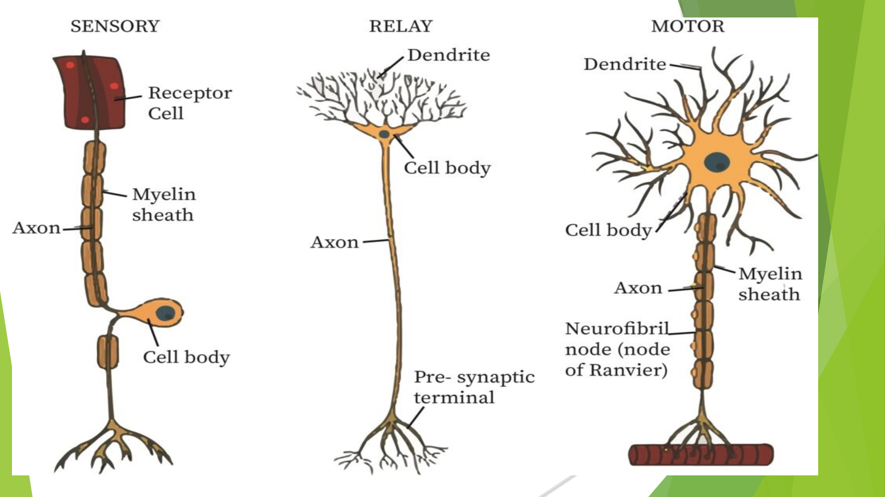

CONT-
Classification according to function-
1.Sensory-either contain sensory receptor at their distal end or
located just after sensory receptor that are separate cells.
2.Inter neuron- these are mainly located with the CNS and spinal
cord between sensory and motor neuron.
3. motor neuron-convey action potential away from the CNS to
effectors muscle or gland in the periphery through cranial or spinal
nerve.

NEUROTRANSMITTER-
It is also called chemical messengers any of a group of chemical
messenger agents released by neurons to stimulate neighbouring
neurons ,muscle and glands which allowing impulses to be passed
from one cell to next throughout the nervous system.

CONT
Classification are depending upon chemical nature-
amino acid
amines
others
Depending upon function
excitatory
inhibitory
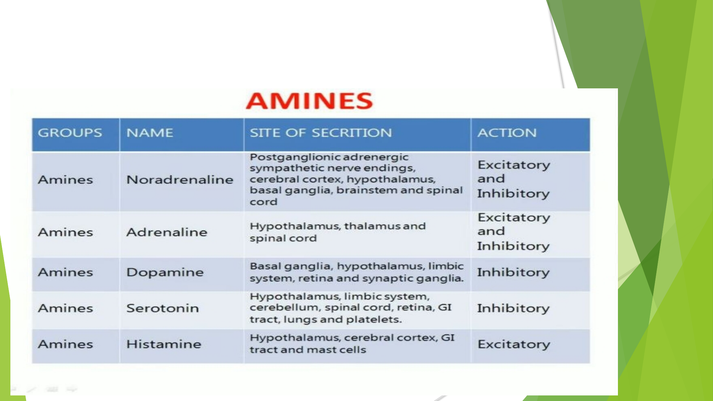
Classification are depending upon
chemical nature-
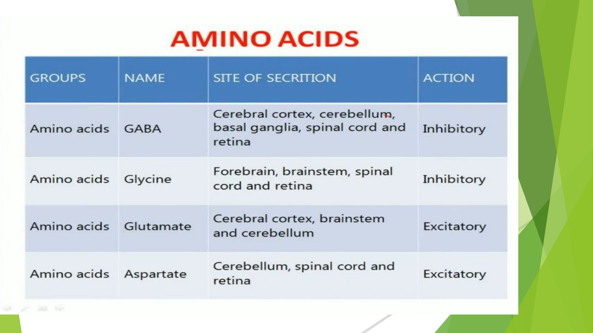
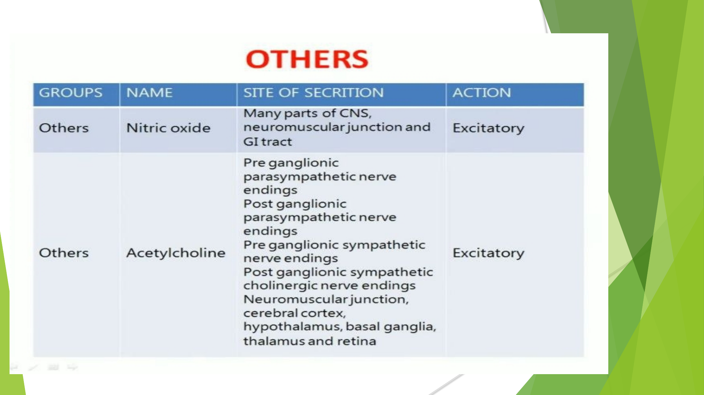
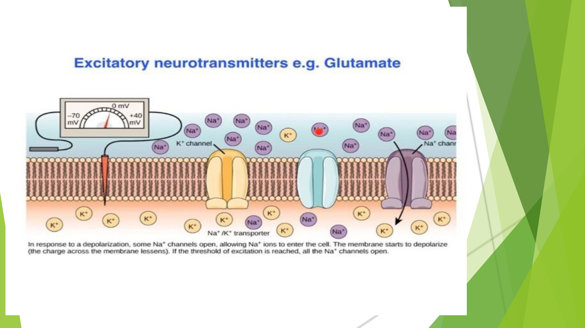
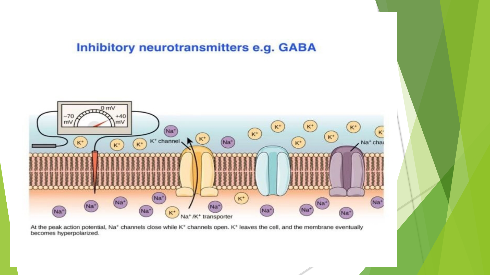

SYNAPSE:-
The junction between the axon of one neuron
and the dendrite of another ,through which two
neurons communicate.
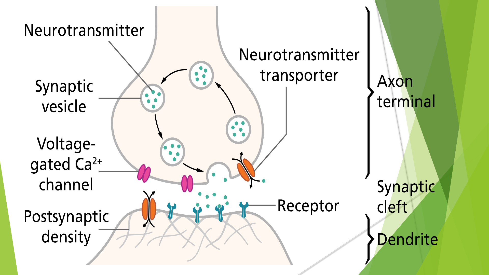

CENTRAL NERVOUS SYSTEM
BRAIN:-
It is a soft organ present in cranial cavity made up of neuron and
supporting glial cell which control all body system.
In brain there is presence of 100 billions neuron and 50 trillions
glial cell.
Brain is other wise called encephalon.
Maximum multipolar neuron present in the brain.
The outer bony covering of brain called cranium and vertebral
column is outer covering of spinal cord.

CONT-
Cerebrum is the largest part of brain and cerebellum is the
second largest part of brain.
The medulla in which the breathing centre is located is one
part of the brain.
Cerebrum has falx which divide left cerebral hemisphere and
right cerebral hemisphere.
Brain contain 40% of grey matter and 60% white matter.
.
The brain and spinal cord are completely surrounded by 3 layers
that is dura mater ,arachnoid mater ,pia mater.
CSF- cerebrospinal fluid is a colourless fluid composed water and
other substance , it work as a shock absorber and supply oxygen
nutrients to neuronal cell and play a major role in blood CSF barrier
.total volume of CSF is 80-150 ml in an adult.
There are 4 ventricle present in the brain that is two lateral ventricle
third ventricle and forth ventricle .
CSF secrete from choroid plexus and circulate to subarachnoid
plexus .
CONT

SPINAL CORD:-
qSpinal cord is a long thin tube like structure which is
the part of CNS. It starts from just below the medulla
in the brain stem and extends down to between the 1
st
and 2
nd
lumbar vertebrae
qSc length in MALE- 45 cm FEMALE- 43cm
qSc is the main pathway for information connecting the
brain and the rest of body.

CONT-
Like brain spinal cord is protected and nourished by three layers
of membrane called meninges.
Spinal cord divided into 31 segment ,which is correspond 31
pairs spinal nerves .
Spinal cord has two swelling cervical and lumbar ,they are
control upper limb and lower limb.
At second way of the spinal cord promotes homeostasis by
serving integration centre for some reflex to fast voluntary
signal ,which is called the reflex arch.
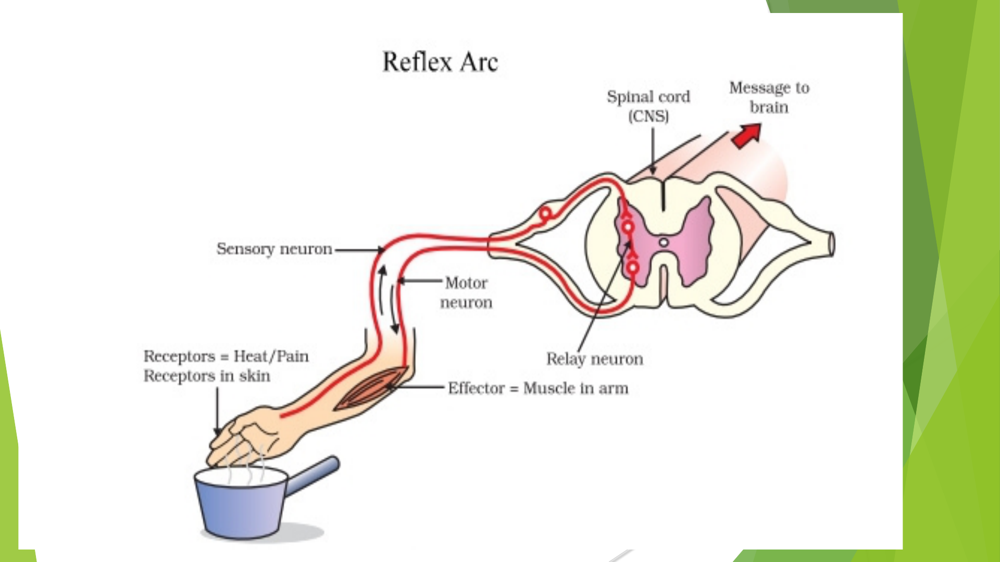

PHERIPHERAL NERVOUS SYSTEM
It plays key role in both sending information from different areas
of your body back to your brain as well as carrying out
commands from your brain various parts of body.
These nerves from the communication network between the
CNS and the body parts.
It further subdivided into various type , there are 43 pairs nerves
forming the PNS -
i.e Sc is 31 pair and 12 pair CN
CRANIAL NERVE
Olfactory–sensoryMnemonic-one of our tamil teacher asked for very good
Optic–sensoryvada and halwa
Oculomotor-motor,
Trochlear-motor
Trigeminal-mixed
Abducens-motor
Facial–motor
Auditory-sensory
Glossopharyngeal–mixed
Vagus–mixed
Accessory–motor
Hypoglossal-motor
SPINAL NERVE
v Cervical plexus (C1 -C5)
v Brachial plexus (C5-T1)
v Lumbar plexus (L1-L4)
v Sacral plexus (L4-S4)

NEUROLOGICAL ASSESSMENT-
Neurological assessment is systemic process evaluation of a persons
nervoussystemthatincludeavarietyoftests-
1. Cerebral function
2. Cranial nerves
3. Motor system
4. Reflexes
5. Sensory system
DEEP TENDON REFLEX-
REFLEX MUSCLE NERVE
Bicep Bicep
brachii
musculoc
utaneous
Brachio
radialis
Brachior
adialis
Radial
Triceps Triceps Radial
Knee jerk Quadrice
psfemoris
Femoral
Ankle
jerk
gatrocne
mious
Tibial
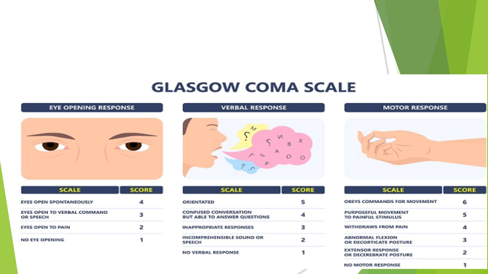
GLASSGO COMA SCALE – It is a systemic score to
measure how conscious you are, level of awareness and how you
respond to basic instruction.
TRAUMATIC BRAIN
INJURY

INTRODUCTION

Definition:-
Head injury is a term used to refer injury to the brain, skull and
scalp or both structure. this can be range from mild bump or
bruise to a traumatic brain injury.
LEADING CAUSE OF DEATH-
Road traffic accidents accident death and injuries and disability in
India current scenario.
Road traffic accident resulted in the INDIA is in 2005:- Death
rate- 110,000 persons ,Hospitalization-2.5 millions
In2010:- Deathrate-150,000,Hospitalization-3millions
In 2015:-Deathrate-200,000,Hospitalization-3.5 millions

Classification:-
Head injury can be classified into 4 types –
1. Scalp injury
2. Skull injury
3. Cerebral injuries
4. Intra cranial hematoma
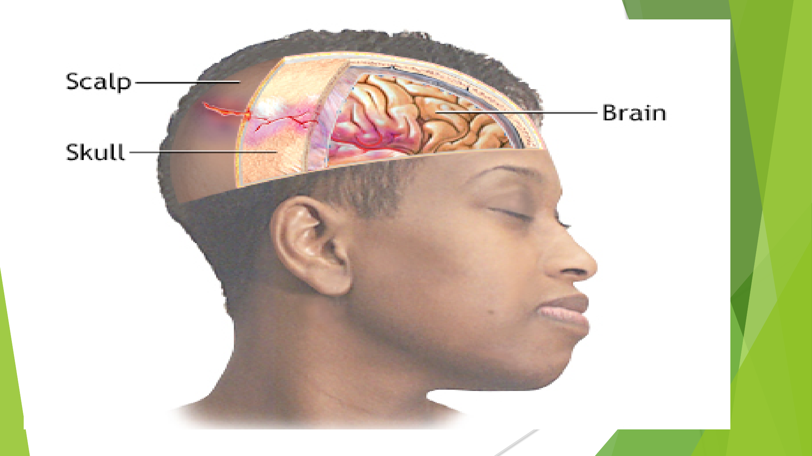
SCALP INJURIES –
If damage occur in the outer soft tissue called scalp
injury ,types are-
contus
ion
• it is brushing of the brain tissue with a focal area or a blunt injury that causes damage to the
underlying soft tissue.
• it is usually open (break skull up to meninges) and close( injury happen internally)
Abrasi
on
• it occur when skin rubs against a rough or hard surface .
• it is usually minor after injury blood leaks out of the damage blood vessel and collected by
surrounding tissue causing black and blue marks beneath the skin.
Lacer
ation
• a laceration is a deep cut or tearing of your skin
• most common complication result from laceration is infection ,swelling and excess pain.

SKULL INJURY-
1.Linear skull injury- simple break in the skull that follow a relatively straight
line .it occurs from minor head injury, fall, blows, struck by rock motor
vehicle accident.
2.Depressed skull fracture -forceful impact most commonly harmers, rock or
other heavy objects. This injury cause depressed skull bone. if the depth of
depressed is half inch required elevate bony pieces for evidence injury.
3.Basilarskullfracture–afractureofbonesoftheflooroftheskulland
result severe blunt head trauma of significant force. Due to force fracture
happen and due fracture air entry to the sinus cavity and infection occur.

CONT-
4.Comminuted fracture -it is the complication of fissure
fracture and depressed fracture. Two or more fracture lines
dividing the bone into 3 or more segment.
5.Ringorforamenfracture–fissuredfractureencirclestheskull
and separates anterior third from middle and posterior third.
6.Perforatingfracture–itiscausedbyfirearmsandpointed
sharp weapons like daggers knives.
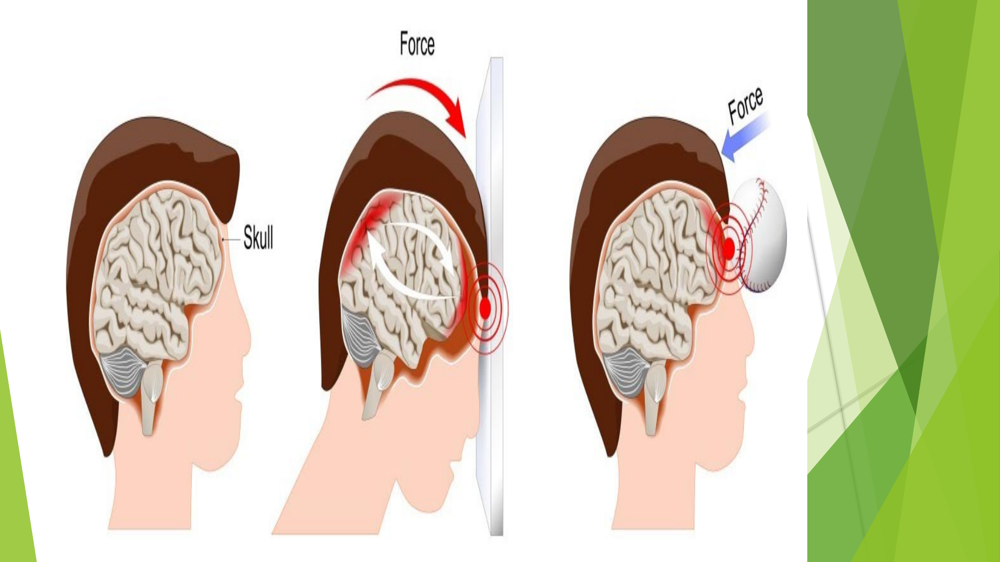
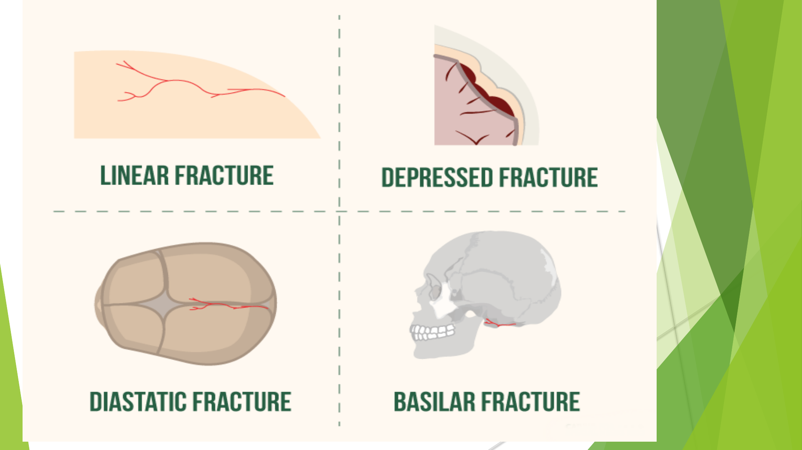
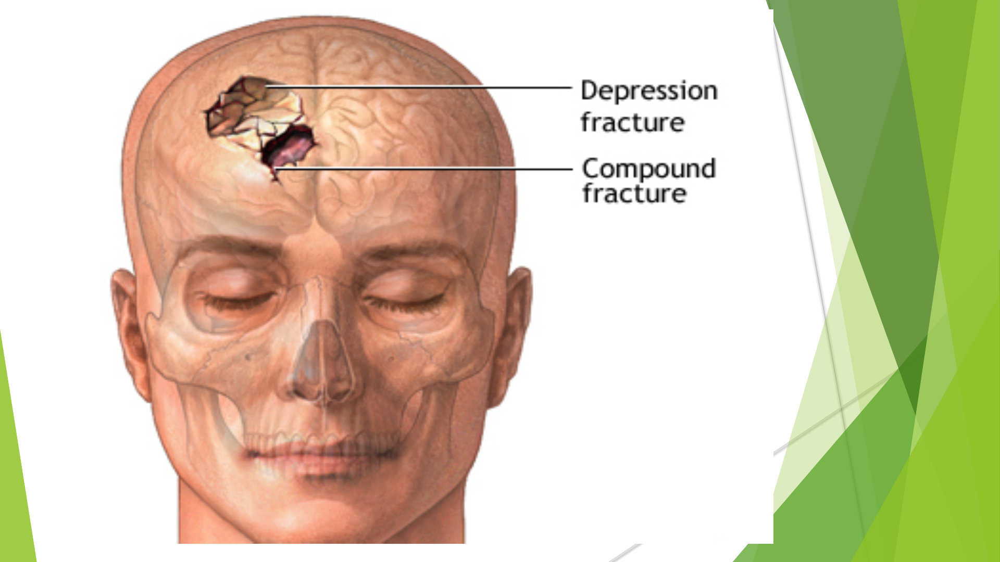

CEREBRAL INJURY-
.1.Concussion–aconcussionafterheadinjuryis
a temporary loss of neurologic function with
no apparent structural damage to the brain.
Injury from an acceleration and deceleration
force a direct blow, blast injury.
If brain tissue in the frontal lobe affected the
patient may have irritational behaviour, if
trauma involve in temporal lobe it can produce
temporary amnesia or disorientation.
.
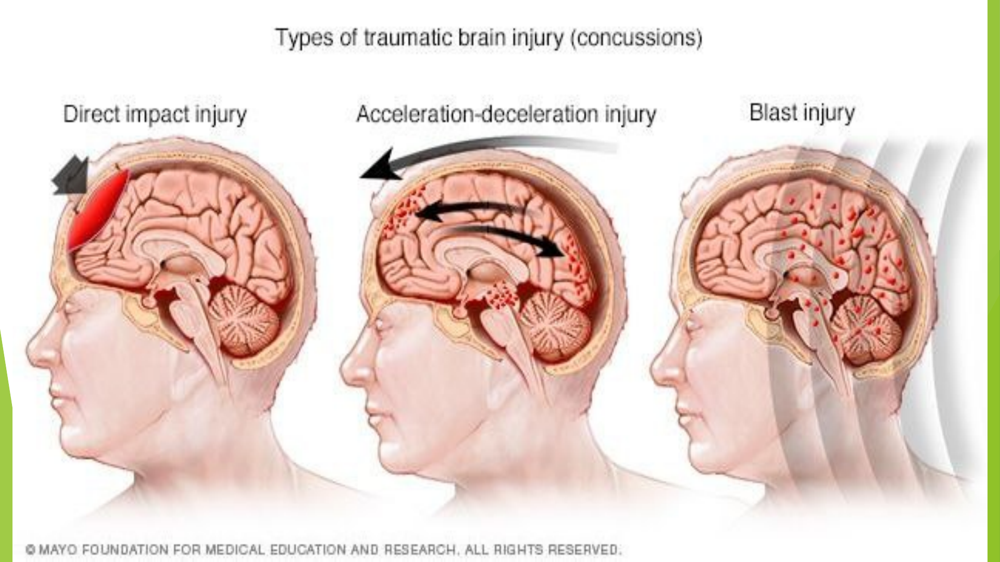

Types of concussion according to GCS score
Mild- GCS 13-15 with loss of consciousness for 15 min
Moderate-GCS 8-12 with loss of consciousness for 6 hours
Severe -GCS below 8 with loss of consciousness more than 6
hour.
Clinical features like worsening, headache, dizziness, seizure,
vomiting, slurred, speech, numbness involve.
2. Contusion –incerebralcontusionamoderatetoseverehead
injury the brain is brushed and damaged in a specific area because
of severe acceleration on force or blunt trauma.
It may be occur in any area of brain mostly around the sylvian
fissure at the orbital and temporal less commonly the parietal and
occipital areas.
Contusion characterised by loss of consciousness stupor and
confusion.
The effect of injury peak after 18-36 hour.
CONT
3.Brainstem injury -this is rare trauma that leads to injury
any Part of mid brain, Pons and medulla due to accident or
falling.
4.Diffuse axonalinjury–DAIresultfromwidespreadand
rotational forces that produce damage throughout the brain
to axons in the cerebral hemispheres corpus callosum and
brain stem. DAI is mostly associated with prolonged coma.
With DAI patient may experience immediate coma
decorticate and decerebrate posturing and global cerebral
oedema which slowly increase in ICP.
CONT

CAUSES-
qMotor vehicle crashes
qFalls
qPhysical assaults
qSports related accident
qBeing struck by objects
qAlcohol involvement
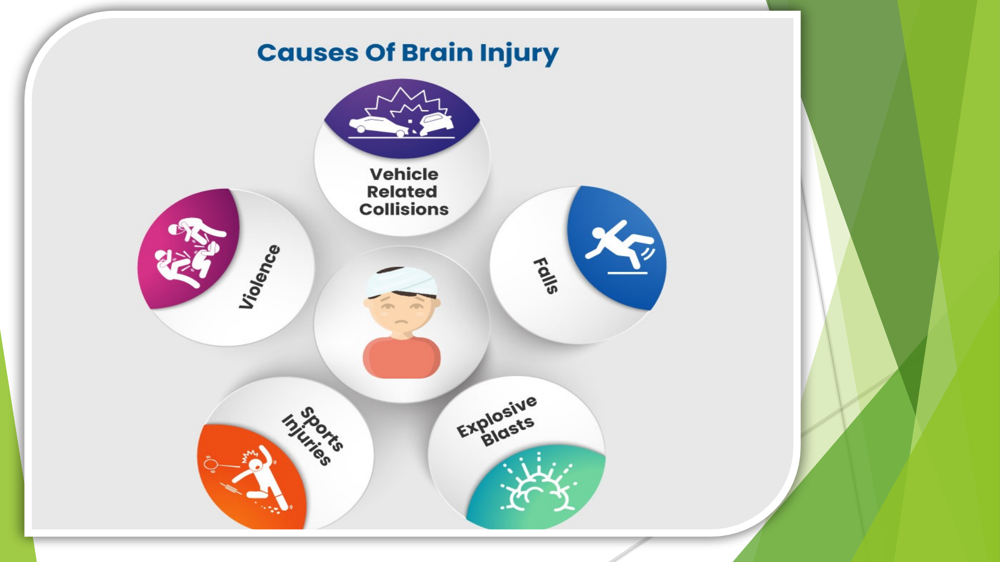
PATHOPHYSIOLOGY-
Due to etiological factor
Brain suffer traumatic injury
Brain swelling or bleed
Increase ICP(Impaired auto regulation altered CBF)
Pressure on blood vessel within the brain
Decrease CPP and blood flow to the brain
Cerebral hypoxia and ischemia
Brain tissue damage

CLINICAL MANIFESTATION:-
Altered level of consciousness
Confusion
Pupillary abnormalities (changes in size and shape and to
light)
Altered or absent gag reflex
Metabolic disturbance
Sudden onset of neurologic deficits
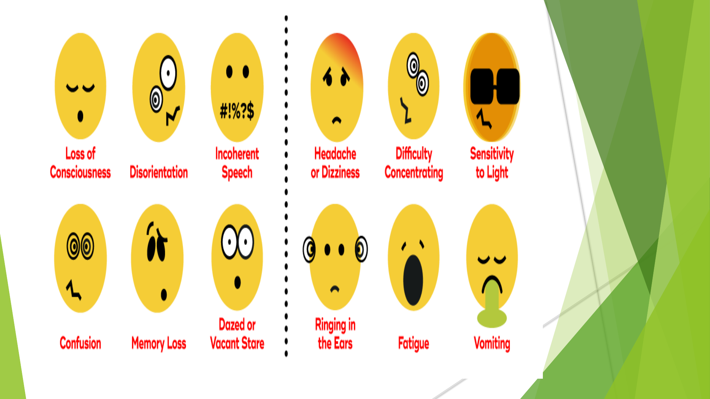
CONT-
Vision and hearing impairment
Sensory dysfunction
Spasticity
Vertigo
Movement disorder
Seizures

Difficulty in judgement
Insomnia
dizziness
poor concentration
Changes in vital sign (altered respiratory pattern,
hypertension,bradycardia,hypothermia,
hyperthermia)

DIAGNOSTIC EVALUATION:-
History collection and physical examination
CT ( computed tomography) and MRI(magnetic
resonance imaging)
PET(positron emission tomography)
ABG analysis
x- ray
Glasgow coma score
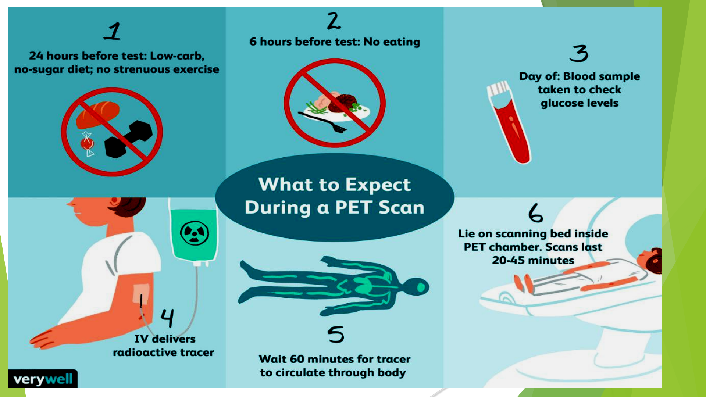
CONT
History taking:
Mechanism of injury
Lossofconsciousness–
vEvidence of seizure
vHistory of vomiting
Pupil size and response
LookforSignsindicateskullfracture–
v Bilateral periorbital oedema
v Battles sign (brushing over mastoid)
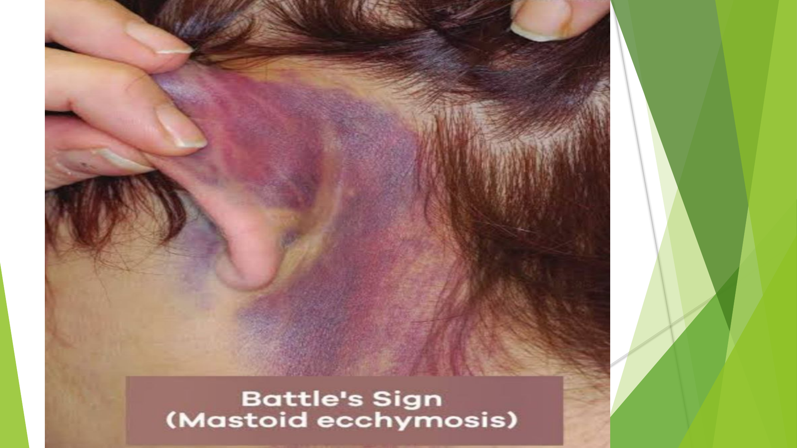
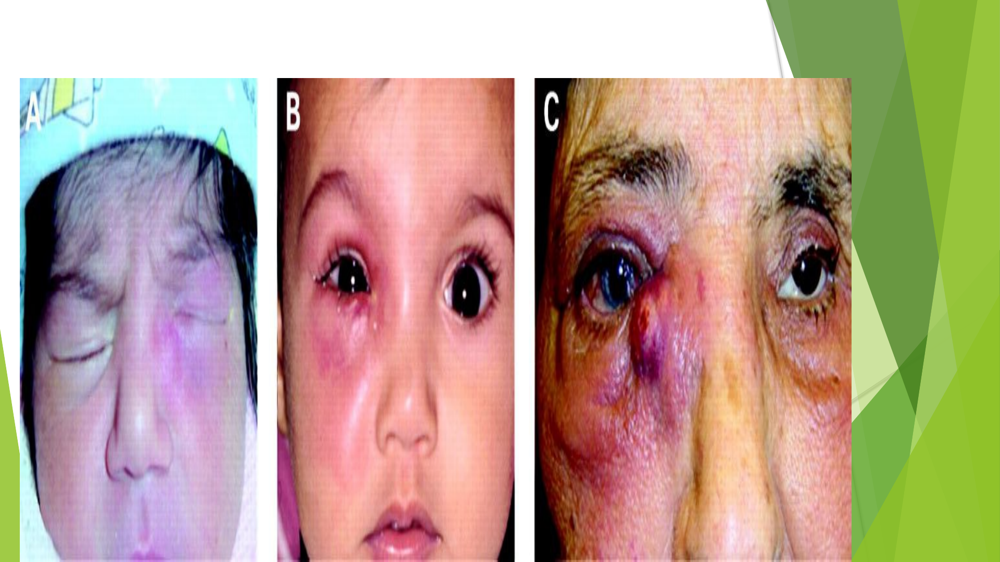
Bilateral periorbital oedema-

COMPLICATION:-
Cerebral oedema
Infection like meningitis and brain abscess
Acute hydrocephalus
Diabetes insipidus
SIADH
Arteriovenous aneurysms
Deep venous thrombosis
Post trauma response
CONT-
Neurogenic pulmonary oedema
Arteriovenous aneurysms
Altered behaviour
Post trauma response
Deep venous thrombosis
Spasticity

SPECIFICHEADINJURYANDIT’S
MANAGEMENT:-
SCALP INJURIES-
Abrasion -no specific treatment
Contusion-cold application
Laceration-explore sterile glowed hand to see any
foreign body and sutures if needed.

SKULL INJURIES-
Depressed fracture-surgical intervention to elevate
the depressed bone and debride the underlying
structures of bone fragment .
Comminuated fracture-craniotomy and cranioplasty
Basal skull fracture-antibiotics and maximum rest

CEREBRAL INJURIES-
Severe head injury is best managed in a neuro intensive
care setting.
The patient should be positioned with the head up to 30
degree.
It is important to ensure that the cervical immobilisation
collar does not obstruct venous return from the head.

CONT-
Airway and ventilation:-
Patient in traumatic coma is unable to protect
their airway and is at risk for aspiration.
Maintain a normocapnia.
Circulation and cerebral perfusion pressure

CONT-
Hypotension and hypoxia as a major cause of
secondary brain injury.
A systemic BP <90 mm hg worse outcome in
traumatic coma.
Cerebral perfusion pressure should be maintained
at >65 mm hg in severely head injured patient.

CONT-
Control of intracranial pressure:-
Position head up to 30 degree.
Avoid obstruction of venous drainage from head.
Sedation + muscle relaxant

MEDICAL MANAGEMENT-
OSMOTIC DIURETICS;
mannitol 25%,1.5-2g/kg iv infused over 30-60minutes.
ANTICONVULSANTS;
Phenytoin - where it may inhibit spread of seizure activity
in motor cortex.
Dosage-load10-15mg/kgmaintenance–100mgiv/po

CONT-
BARBITURATES;
it will reduce the brain metabolic rate and helps reduce
ICP.
Dosage- 100mg iv or 150-200mg iv.

SURGICAL MANAGEMENT-
No surgical intervention if collection <10ml
Indication–thepatientpresentswithfixedand
dilated pupils.
The intracranial pressure exceed 20 mm hg
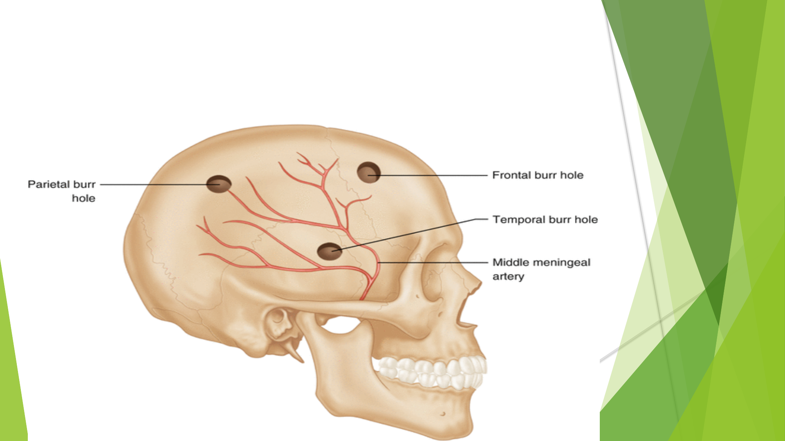
Types-
Burr hole-opening into cranium with a drill.
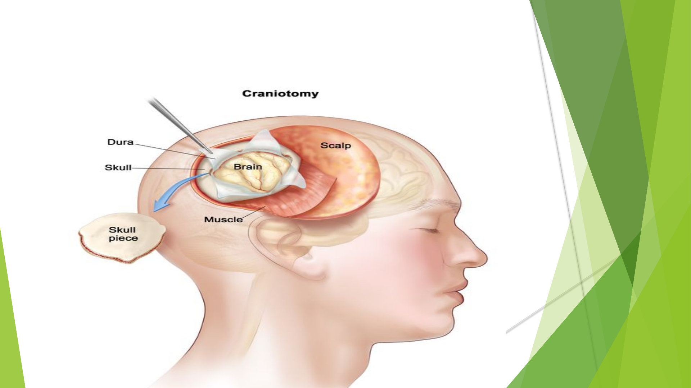
Craniotomy- bone flap is temporarily
removed from the skull to access the brain.
.
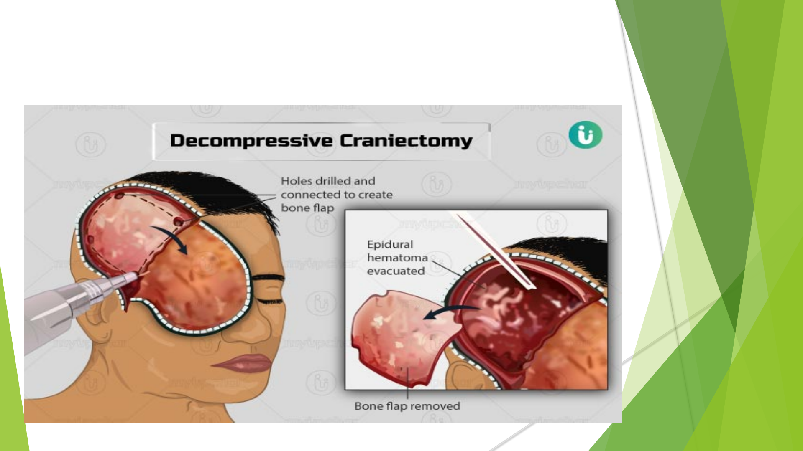
Cranioectomy- part of skull is removed to allow a swelling
brain to expand with out being squeezed.
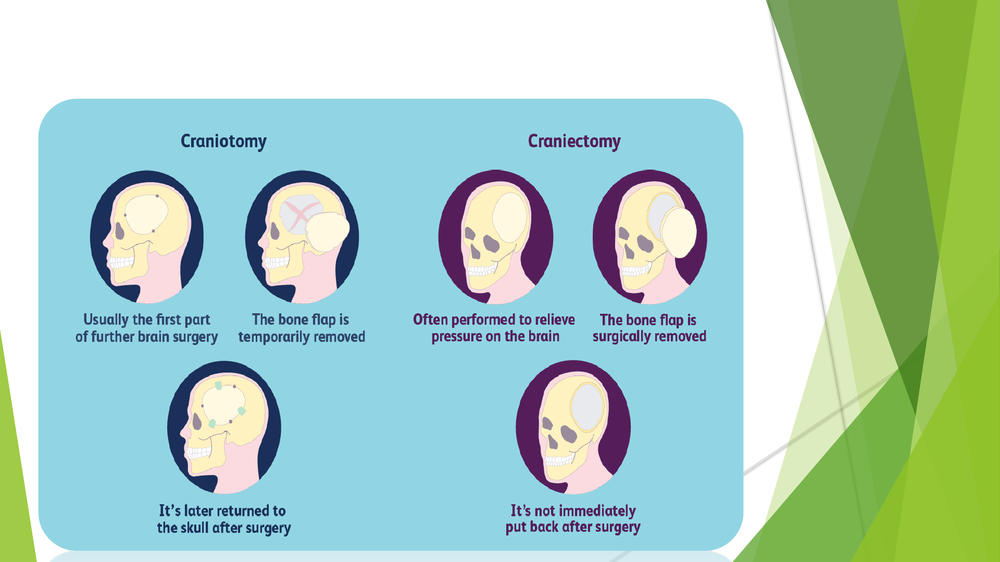
THE DIFFERENCE BETWEEN CRANIOTOMY AND
CRANIOECTOMY -
NURSING
MANAGEMENT
NURSING PROCESS-
1.Assessment-
vRespiratory rate: Increased or decreased respiratory rate
vOxygen saturation levels: Below normal range
vShallow or labored breathing
vPresence of crackles or wheezes upon auscultation
vAltered level of consciousness
vInability to clear secretions effectively
vInadequate cough or gag reflex
vEvidence of aspiration (e.g., coughing after swallowing)

Nursing Diagnosis- 1
1.Ineffective airway clearance and impaired gas exchange related to
brain injury.

Goals-
Ø Maintain a clear airway and promote effective coughing and
secretion removal.
Ø Improve oxygenation and maintain optimal gas exchange.
Ø Prevent complications related to ineffective clearance and
impaired gas exchange.
Ø Educate the patient and family on measures to improve
clearance and gas exchange.

Intervention-
Monitor and Assess:
ØMonitor respiratory rate, pattern, and effort regularly.
ØMonitor oxygen saturation levels using pulse oximetry
ØAssess the patient's level of consciousness and responsiveness.
Positioning and Mobility:
ØPosition the patient in an upright or semi-Fowler's position to maximize lung
expansion.
ØEncourage mobility and frequent position changes to promote ventilation and
drainage of secretions.

CONT-
Airway Management:
Ø Ensure the patency of the airway and remove any obstructions promptly.
Ø Perform suctioning as needed to clear secretions.
Ø Administer oxygen therapy as prescribed to maintain adequate oxygenation.
Secretion Management:
Ø Administer prescribed expectorants or mucolytic agents to facilitate
secretion clearance.
Ø Implement chest physiotherapy techniques (e.g., postural drainage)

Evaluation-
ØAssess the patient's respiratory rate, pattern, and effort. Note any
improvements or changes.
ØMonitor oxygen saturation levels and document improvements
within the desired range.
ØEvaluate lung sounds for the presence of crackles or wheezes.
ØAssess the patient's ability to clear secretions effectively and
identify any signs of aspiration.
ØEvaluate the patient's level of consciousness and note any changes
or improvements.

Nursing Assessment 2
Ø Obtain a thorough patient history, including any pre-existing conditions,
medications, and recent events.
Ø Assess vital signs, paying particular attention to blood pressure, heart rate,
and respiratory rate.
Ø Perform a neurological assessment, including level of consciousness,
pupillary response, and motor function.
Ø Assess for signs and symptoms of increased intracranial pressure, such as
headache, vomiting, changes in vision, or altered mental status.
Diagnosis 2-
Altered tissue perfusion related to hypotension, hematoma, and increased
intracranial pressure can be the primary nursing diagnosis.

Planning:
Ø Set realistic and measurable goals in collaboration with the patient
and healthcare team.
Ø Goals may include maintaining adequate blood pressure, improving
cerebral perfusion, reducing intracranial pressure, and preventing
complications.
Ø Develop an individualized care plan based on the patient's specific
needs and resources.

Implementation:
Ø Administer prescribed medications to manage hypotension, such as
intravenous fluids or vasoactive medications.
Ø Monitor and maintain hemodynamic stability by closely monitoring blood
pressure, heart rate, and oxygen saturation.
Ø Position the patient in a way that optimizes cerebral perfusion, such as
elevating the head of the bed to 30 degrees.
Ø Provide a quiet and calm environment to reduce stimuli that may increase
intracranial pressure.
Ø Collaborate with other healthcare providers to manage any surgical
interventions or procedures required for the hematoma

Evaluation:
Ø Continuously assess and reassess the patient's response to interventions.
Ø Monitor vital signs and neurological status regularly.
Ø Evaluate whether goals and outcomes have been met, and revise the care
plan as needed.
Ø Provide patient and family education regarding the importance of
medication adherence, lifestyle modifications, and signs of complications
to promote ongoing management.
Ø Remember, nursing care should be individualized, and interventions
should be tailored to meet the patient's specific needs. Regular
communication and collaboration with the healthcare team are crucial for
providing effective care to patients with altered tissue perfusion related to
hypotension, hematoma, and increased intracranial pressure.

Nursing assessment 3-
Ø Conduct a comprehensive assessment of the patient's perception of body
image, including their feelings, attitudes, and beliefs about their appearance
and physical abilities.
Ø Gather information about the patient's prior self-image and how it has
changed following the brain injury and physical disability.
Ø Assess the patient's level of distress, anxiety, or depression related to their
altered body image.
Ø Observe the patient's behavior, interactions, and expressions of body
dissatisfaction or discomfort.
Ø Communicate with the patient and their family to gain insight into their
concerns and expectations
.

Nursing diagnosis 3-
Disturbed body image related to brain injury and physical disability related
to diagnoses may include impaired social interaction, risk for impaired
self-esteem, and ineffective coping.

Planning-
Ø Collaborate with the patient, their family, and the interdisciplinary team to
establish realistic and achievable goals.
Ø Goals may involve enhancing body acceptance, improving self-esteem,
fostering adaptive coping strategies, and promoting social interactions.
Ø Develop an individualized care plan that considers the patient's specific
needs, preferences, and available resources.

Implementation:
Ø Provide emotional support and empathy to the patient, allowing them to
express their concerns and feelings about their body image.
Ø Encourage the patient to participate in self-care activities as independently
as possible, promoting a sense of control and autonomy.
Ø Assist the patient in exploring and adopting adaptive coping mechanisms,
such as relaxation techniques, journaling, or engaging in creative outlets.
Ø Collaborate with physical and occupational therapists to develop a
rehabilitation plan focused on maximizing physical function and
independence.
Ø Educate the patient and their family about the nature of brain injury and
physical disability, addressing common misconceptions and promoting
realistic expectation.

Evaluation:
Ø Continuously assess the patient's body image perception and emotional well-being
throughout the care process.
Ø Evaluate the patient's progress toward achieving their goals, considering improvements
in self-esteem, body acceptance, and engagement in meaningful activities.
Ø Modify the care plan as needed, based on the patient's evolving needs and responses to
interventions.
Ø Encourage open communication with the patient and their family, seeking their feedback
and addressing any ongoing concerns or challenges related to body image.
Ø Remember, promoting a positive body image and supporting patients in their adjustment
to brain injury and physical disability requires a holistic and patient-centered approach.
Collaborating with the interdisciplinary team and involving the patient and their family
in the care process can enhance the effectiveness of nursing interventions.

Nursing assessment 4-
Ø Monitor vital signs, including blood pressure, heart rate, and respiratory rate.
Ø Assess level of consciousness using appropriate tools such as the Glasgow
Coma Scale.
Ø Observe for signs of altered cerebral perfusion, such as changes in pupillary
response, motor function, or mental status.
Ø Monitor ICP values using an invasive or non-invasive monitoring device.
Ø Evaluate laboratory values, including arterial blood gases, serum electrolytes,
and coagulation profile.

Goal-
Ø Promote effective cerebral tissue perfusion.
Ø To maintain and monitor vital sign.
Ø To optimize oxygenation.
Ø To reduce icp
Ø To administer medication as prescribed.
Ø To educate the patient and family and continously monitor,
documentation

Nursing diagnosis 4-
Ineffective Cerebral Tissue Perfusion related to increased intracranial
pressure (ICP) and decreased intracranial pressure

Interventions-
a. Ineffective Cerebral Tissue Perfusion related to increased ICP:
Ø Elevate the head of the bed to 30 degrees to promote venous outflow and
reduce ICP.
Ø Administer prescribed medications, such as osmotic diuretics (e.g.,
mannitol) or corticosteroids, to reduce cerebral edema and ICP.
Ø Maintain a calm and quiet environment to minimize stimulation and reduce
ICP.
Ø Monitor and control fever, as hyperthermia can increase cerebral metabolic
demand and ICP.
Ø Collaborate with the healthcare team to determine the need for surgical
intervention, such as craniotomy or craniectomy, to relieve increased ICP.
CONT-
b. Ineffective Cerebral Tissue Perfusion related to decreased ICP:
Ø Position the patient in a semi-Fowler's position to facilitate cerebral blood
flow.
Ø Administer intravenous fluids or blood products as prescribed to maintain
adequate intravascular volume and improve cerebral perfusion.

Evaluation-
Ø Evaluate the patient's response to interventions by monitoring vital signs,
neurological status, and level of consciousness.
Ø Evaluate ICP values and compare them to the patient's baseline or target
range.
Ø Review laboratory values to assess improvements in arterial blood gases,
electrolyte balance, and coagulation profile.
Ø Collaborate with the healthcare team to modify the care plan based on the
patient's progress and changing condition.

Nursing Assessment 5 -
Assess the patient's current understanding of their medical condition,
treatment modalities, and prognosis.
Identify the patient's learning needs and preferred learning style.
Determine any cultural or language barriers that may affect the patient's
understanding.
Evaluate the patient's sources of information and their reliability.
Assess the patient's readiness and motivation to learn

Nursing Diagnosis 5-
Knowledge Deficit related to treatment modalities and
current situation.

Goal-
Ø Promote Effective Cerebral Tissue Perfusion
Ø Maintain and monitor vital signs.
Ø Reduce intracranial pressure (ICP).
Ø Monitor neurological status.
Ø Administer medications as prescribed.
Ø Provide a calm and supportive environment.
Ø Educate the patient and family.
Ø Continuously monitor and document the patient's response.

Intervention
Ø Regularly assess and record the patient's blood pressure, heart rate, and
respiratory rate to detect any changes that may indicate compromised cerebral
perfusion. Maintain blood pressure within an appropriate range as per the
healthcare provider's orders.
Ø Reduce ICP by elevated head at 30 degree.
Ø Regularly assess and document the patient's level of consciousness, pupillary
response, motor strength, and any signs of neurological deterioration.
Ø Administer medications that promote cerebral tissue perfusion, such as (e.g.,
dopamine, norepinephrine) or inotropic agents (e.g., dobutamine) These
medications can help improve blood pressure and cardiac output, thereby
enhancing cerebral perfusion.
Ø Minimize external stimuli and maintain a quiet environment to reduce stress
and agitation in the patient.
Ø Provide education to the patient and their family regarding the importance of
maintaining optimal cerebral tissue perfusion.

Evaluation-
Ø The patient demonstrates an accurate understanding of their
treatment modalities and current situation.
Ø The patient asks appropriate questions and expresses a sense of
confidence in managing their treatment.
Ø The patient's family members or caregivers demonstrate an
understanding of the patient's treatment modalities and can provide
support as needed.
SUMMARY
CONCLSION

RESEARCH RELATED STUDY-
ABSTRACT-
Audit of transfer of unconscious head injured patients to a neurosurgical unit.
BY CP SYMONDS,W RITCHIE RUSSELL
The increase in economic growth in India coupled with rise in population,
motorization and industrialization has contributed to a significant increase in
TBI and each advancing year, it result deaths, injuries and disabilities in all
age groups but more in young and disabilities in all age groups but more in
young and productive persons and higher in males than females. The most
common cause of TBI normally reported in our country are RTA accounting
60% followed by falls and assaults contributing to 25% and 10% of traumatic
brain injuries. The sudden occurrence of brain injury place phenomenal
burden on day to day activities affecting survival and income.

METHODOLOGY-
Research approach: quantitative research approach
Research setting: NIMHANS, Bangalore
Population: adult age group 25-30years
Sample size:200
Sample technique: non-probability convenient sampling technique
241(6227),7-1THE
LANCET 0,2011

REFERENCES-
1. TORTORA. J.GERARD, ANATOMY AND PHYSIOLOGY (2015 EDITION), PP
79-81, INDIA , WILEY PUBLISHER.
2. GAUTTAM VIJYA KUMAR, PROCEDURE MANUUAL OF MEDICAL
SURGICAL NURSING, FIRST EDITION, PAGE NO 119-134, KUMAR
PUBLISHING HOUSE.
3. KOUR SUKHPAL, CLINICAL NEUROSCIENCE AND CRITICAL CARE
NURSING, FIRST EDITION, PAGE NO 114-122, JAYPEEBROTHERS
MEDICAL PUBLISHER.
4. PREMA TP AND KF GRAICY, ESSENTIAL OF NEUROLOGICAL AND
NEUROSURGICAL NURSING, SECOND EDITION, PAGE NO 715-730,
JAYPEE BROTHERS MEDICAL PUBLISHERS.
5. BECK R.ERIC, L.SOWHAMI ROBERT,HANNAG.MICHAEEL,HOLDRIGHT
R,DIANA,TUTORIALS IN DIFFERENTIAL DIAGNOSIS, FOURTH
EDITION,PAGE NO 455-457,ELSEVIER PUBLICATION.
6. WILKINS AND WILLIAM LIPPINCOTT, MANNUAL OF NURSING
PRACTICE, EIGHT EDITION, PAGE NO 1122-1127, JAYPEEBROTHERS
MEDICAL PUBLISHER.